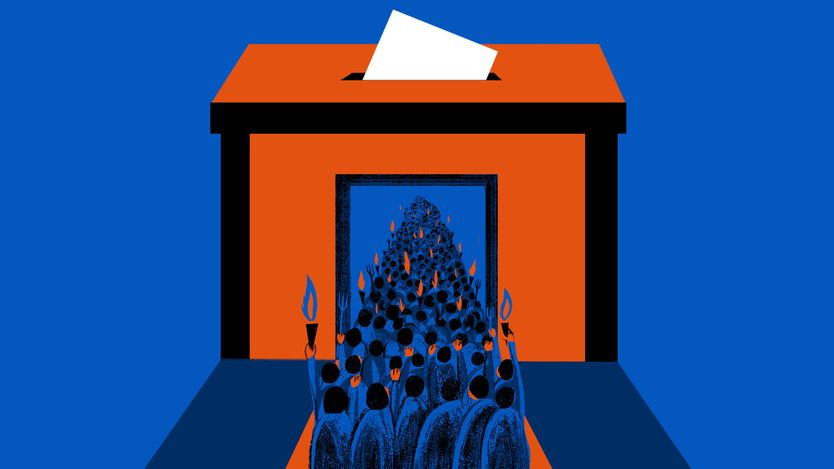

民主比看起来更结实
Democracy is stronger than it looks
开放社会过去熬过了嗜杀左翼和法西斯激进分子，现在也一样

- 美国、巴西、法国、以色列等地将迎来一年愤怒的选战。在最不幸的民主国家，决选可能让选民在右翼蛊惑者与左翼不负责任的民粹派之间二选一，选举公正性也会遭到质疑——俄罗斯等流氓国家正用 AI 视频和机器人播种不信任。
- 但举行自由竞争选举的国家比看起来更抗压。意大利人把约 1969 至 1988 年的血腥年代称为「铅色年代」，左翼革命者和法西斯激进分子用炸弹、枪击和绑架试图推翻国家，共造成 530 人死亡。
- 二十世纪中后期，西方不少学生和知识分子曾嫌弃民主、转向阶级斗争，把毛泽东的革命政权或格瓦拉当作榜样。也有主流政客暗中庇护极端分子，许多欧洲工会被斯大林主义者和托洛茨基主义者把持。
- 研究政治暴力的学者认为，教训很清楚：当政治冲突无法在竞选和议会中展开时，怒火就会上街。这正说明查禁政党和审查仇恨言论是自毁长城。开放社会应当更有信心让投票箱战胜枪弹，并予以反击。
一段愤怒之年正朝各民主国家走来。美国、巴西、法国、以色列等地都将迎来难看的选举。无论谁胜出，有一个结果是可以确定的：愤怒的选民会听到候选人兜售无法兑现的承诺和制造分裂的谎言。
在不走运的民主国家，决选可能让公民在右翼的阴险蛊惑者与左翼不负责任的民粹派之间做选择。选举的公正性也会遭到质疑。这可能表现为输不起的一方质疑结果，也可能是新式攻击——俄罗斯等流氓国家用 AI 生成的视频或机器人播种不信任，或雇人制造恐慌。
选民应当保持警惕，但也要沉住气，因为举行自由竞争选举的国家比它们看起来更抗压。在人们的记忆里，民主社会挺过的不仅是愤怒，还有「铅色年代」。这是意大利人给约 1969 至 1988 年间那个血腥时代起的名字，当时左翼革命者和法西斯激进分子用炸弹、枪击和绑架试图推翻国家。
意大利的苦难并非孤例。从美国到欧洲乃至更广地区，政治暴力的现代史对今天有教益。民主不是文弱或高雅的游戏。它的存在不是为了挑出最上镜的政治人物，再把他们像瓶里的花一样摆好。愤怒折磨着每一个人类共同体。自由社会的天才之处，在于把怒火导进政治。当体制运转正常时，即便激烈的冲突和怨恨也能靠议会交易、公开辩论和公共资金分配这类工具来管理。这个过程或许庸俗，那就庸俗吧。今天焦虑的选民应当记住：在不久前的许多国家，多党政治的替代品，是极端分子以革命之名杀人。
中间派领导人确实有理由沮丧。如果民调属实，法国总统马克龙的继任者很可能是民粹民族主义者玛丽娜·勒庞，她很可能推翻他的大部分政治遗产。德国总理默茨近来民调支持率跌到 13%，比他还招人喜欢的银行劫匪都存在过。但他们的痛苦，比起意大利五度出任总理的阿尔多·莫罗的命运，根本不算什么。1978 年，他被激进左翼恐怖组织「红色旅」绑架、「人民审判」并枪杀。红色旅恨他，是因为他把（不那么狂热的、苏联支持的）意大利共产党拉进联合政府，粉碎了他们的革命梦。
据米兰大学政治学家安德烈亚·鲁杰里报告，那些黑暗年代里，外国恐怖分子（尤其是来自中东的）杀害了不少意大利人，但国内政治暴力杀的人更多。他和同事细致梳理警方与新闻记录后统计出：在意大利的「铅色年代」，极左和极右组织制造了 1802 起爆炸、716 起纵火和 98 起「打断膝盖」，共造成 530 人死亡。
那些年里，令人沮丧地多的西方学生和知识分子嫌弃民主、转向阶级斗争，把中国的毛泽东革命政权或游击队员格瓦拉当作榜样。当政客、实业家或美国外交官被德国的巴德-迈因霍夫组织、红军派或希腊的「11 月 17 日」杀害时，有些人还叫好。还有分离主义恐怖组织，从爱尔兰的爱尔兰共和军（差点杀死时任英国首相撒切尔）到西班牙巴斯克民族主义者的埃塔。
有些情况下，主流民选政客庇护了极端分子。多年后为口述史项目受访时，一位前美国驻希腊大使回忆，一名警察指挥官向他吐露，有权势的人物在保护「11 月 17 日」，此人在警察部把电梯停在两层之间，低声怒吼：「我们不是白痴。我们抓得到这些混蛋。但我们被捆住了手脚。」数量惊人的欧洲工会被斯大林主义者、托洛茨基主义者和其他狂热分子把持。这有助于解释，为何尽管经历了数十年的繁荣上升，西欧许多地方的罢工却在 1960 年代达到顶峰。
这并非在呼吁如今可以自满。政治暴力，包括杀害民选官员，在民主国家仍是一大威胁。跨在意识形态与宗教仇恨之间的伊斯兰恐怖主义同样如此。但国内政治性的爆炸和绑架如今远比过去少见。社会主流群体的成员同情一心摧毁国家的革命者，那样的日子已经过去了。
有人会举出美国的反例：从 2021 年 1 月 6 日试图推翻总统选举结果的努力，到保守派活动人士查理·柯克被谋杀、特朗普总统遭未遂暗杀。政治学家给出一个令人清醒的回答：美国是个特例。没有其他富裕民主国家会对武装抗议者和民兵如此宽容，放弃其他国家享有的对暴力的法定垄断。2024 年逃过一死后，特朗普回味这段历史，得出结论：「只有有分量的总统才会挨枪子。」
尽管每个民主国家各不相同，但征服了政治暴力的国家往往有共同特征。许多情况下，极端分子越了线，因残忍而失去公众支持。同样重要的是，激进分子和分离主义者被纳入了常规政治，组建合法政党参加选举。对鲁杰里教授这样的政治暴力学者而言，寓意很清楚：当政治冲突无法在竞选和议会中展开时，怒火就会上街。这正是查禁政党和审查仇恨言论自毁长城的原因。民主面临严重危险。开放社会应当更有信心，让投票箱战胜枪弹，并予以反击。